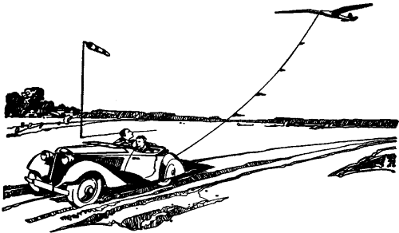

Manual del Vuelo a Vela
Wolf Hirth
1942
Remolque por automóvil o torno
por
RUDOLF KNIEZ
La enseñanza por remolque con auto
y torno ha contribuido en gran medida a la expansión del vuelo sin motor, y aun cuando
sea un método que entre especialistas es a veces desconocido o discutido, no hay que
considerarle como si no se emplease ya en el vuelo a vela. 
Especialmente en los países
llanos, en los que faltan completamente los montes o laderas donde poder emplear el
envuelo por tirantes, no solamente ha habido que fomentar el empleo del torno, sino que
éste ha sido la salvación de los aficionados al vuelo sin motor.
Aun en las comarcas en las que
hay laderas para el empleo de los tirantes, debería practicarse la enseñanza con auto o
torno, pues es de gran valor como preparación para el remolque con avión, así como
para la transformación de pilotos en pilotos de avión con motor, y también es de gran
importancia, para un grupo de aficionados, disponer de esos medios como complementarios
o sustitutivos cuando, por ejemplo, se tiene en la ladera viento de espaldas o lateral,
y no puede emplearse el método ordinario.
Desde luego que el empleo de
estos nuevos métodos supone que se cuenta con terreno apropiado. El remolque por torno
puede emplearse también en una ladera, haciendo, lo que ya se ha ensayado con éxito, que
el torno de remolque esté en lo alto de la meseta y remolcar el aparato hacia la ladera.
En este caso no es necesario disponer de terreno apropiado, pero el empleo del método
exige determinada dirección del viento, porque el torno solamente puede colocarse en
determinado lugar. En cambio el terreno llano tiene la ventaja de que es posible hacer
ejercicios con cualquier dirección de viento.
Casi tan antiguo como la
historia del vuelo es el vuelo remolcado. Ya desde el año 1910 fue conocido el vuelo
remolcado con auto, motolanchas y caballos en Francia, Inglaterra y América. En
Alemania el remolque por auto lo empleó primeramente Wolf Hirth en 1931, en Grunau y más
tarde en Hornberg de un modo sistemático, llevándolo al grado de perfeccionamiento que
hoy tiene. El remolque por torno lo ensayó con éxito Kronfeld en 1931, en Brunswick.
No puedo dejar de decir en
este momento que el remolque por torno es, sin duda, el más económico de los medios de
remolque. Desde luego no hace falta mover el motor a través del aire y, por tanto, no es
necesario comunicar aceleración ni al peso del motor ni al del auto; únicamente hay
que mover el aparato que es de poco peso, el cable y el tambor, y además no hay
resistencias adicionales, como la que produce el aire en un auto en marcha, ni tampoco es
necesario que el suelo sea liso; como ya se ha dicho, hasta puede montarse el torno en
una ladera, y finalmente este procedimiento proporciona un envuelo rápido, consiguiendo
altura suficiente con reducido consumo de combustible. A esto se añade que, dada la
rapidez con que puede ejercitarse la serie de vuelos con el auto o torno, el número de
envuelos que se pueden hacer resulta considerablemente aumentado, de modo que si se quiere
dar enseñanza intensiva, como a veces suele ocurrir, se pueden hacer diariamente ciento
cincuenta despegues en un grupo de quince alumnos, es decir, que cada alumno puede hacer
en un día diez envuelos.
FIG 87. Remolque directo por automóvil. El delgado cable
de acero (unos 3 1/2 mm.) se hace visible en mejores condiciones por medio de banderolas
de tela o de goma. En donde las circunstancias lo hagan posible se
recomienda el empleo de un cable de cáñamo de 12 - 15 mm. de grueso
El coche que se emplee en el
remolque (fig. 87) debe tener motor de suficiente potencia, aproximadamente 50 CV., con
facilidad de acelerar y teniendo todos sus mecanismos en perfecto estado de
funcionamiento, debiendo hacerse su elección con todo cuidado, por razones de seguridad.
Igualmente se debe poner sumo cuidado en la inspección del coche, tanto antes de empezar
los ejercicios como durante su ejecución.
Para el remolque con auto es
lo mejor emplear un planeador con tren de partida (El tren de aterrizaje, como se llama
corrientemente a este órgano de un avión, se designaba al principio con
el nombre, más largo, de tren de partida y aterrizaje, puesto que su objeto es facilitar
las dos fases del vuelo de esos nombres. El uso ha hecho emplear el nombre más corto de
tren de aterrizaje. En este caso, como su objeto principal es facilitar la partida, se le
designa con este nombre. Lo mismo se hará en lo sucesivo. - N. del T.). Para evitar el desgaste del patín,
se le protege con una tira de palastro o un trozo de fleje de acero de la ballesta de un
auto, porque en los primeros arrastrones el alumno sólo rastrea y su atención se
dirige principalmente al timón de dirección para mantener la ruta detrás del auto que
avanza. Una vez que ya ha hecho el alumno sus primeros arrastrones, se monta en el
planeador una rueda fuerte o un tren de partida con una sola rueda, para que el planeador
tenga equilibrio lábil, y así el alumno se ve obligado, no sólo a manejar el timón de
dirección, sino también el mando transversal. Luego hay que hacer que el alumno, por
medio del timón de altura, mantenga el planeador de modo que el patín vaya levantado
del suelo, es decir, que el aparato vaya apoyado solamente en la rueda. Una vez que ya se
hace esto con seguridad, se puede elevar 1 ó 2 metros sobre el suelo y, a esta altura, ir
siguiendo al automóvil. El aterrizaje se consigue disminuyendo la velocidad lentamente.
Desembragar el aparato del cable se hará, por lo pronto, desde el auto. Una vez que ya se
vaya teniendo seguridad, será el alumno mismo el que desembrague a la señal convenida.
Hay que recomendar mucho al
alumno, desde el principio, lo siguiente
Antes de desembragar, empujar la
palanca para situar el aparato en la posición de planeo;
después, desembragar y convencerse de que el cable cae efectivamente.
Hay que enseñar bien al alumno que
en el vuelo cautivo, al contrario de en el vuelo libre, « tirando » como normalmente
de la palanca se obtiene mayor velocidad y « empujando» resulta menor velocidad.
Después se hace que el alumno
alcance remolcado los 25 m. de altura y que describa una virada de 45º; hechos veinticinco o treinta vuelos
en total, se lleva la altura a los 50 ó 60 m. largando 200 m. de cable, y entonces puede
ya pedirse al alumno el aterrizaje en lugar fijado con vuelo en S. En general, bastan de
tres a cuatro vuelos en S para que el alumno pueda hacer aterrizajes en lugar fijado que
exijan virada completa. Hay que conceder, desde el principio, mucha importancia a los
aterrizajes correctos sobre tres puntos y en lugar fijado.
Con el procedimiento de
remolque por auto, como el vuelo cautivo dura mucho relativamente, el principiante tiene
tiempo para compulsar el efecto de las maniobras de los mandos y puede corregir, sin
peligro para él y para el planeador, los errores que cometa. Si no lo consigue, el
profesor que va en el auto le llevará dulcemente al suelo disminuyendo la velocidad.
La enseñanza por remolque con
torno se hace no con un auto en marcha, sino con un auto fijo (fig. 85).
Para construir un torno de
remolque se emplea un coche de 50 CV, por lo menos, al cual se le adiciona un tambor en
una de las ruedas posteriores, siendo esta organización la más sencilla, tanto en cuanto
a montaje como en su empleo, según se ha comprobado con miles de vuelos durante largos
anos. Quizá haya mejores tornos, pero no tendrán la sanción de la larga experiencia que
se tiene de este sistema.
El torno deberá estar provisto
de una guillotina para cortar el cable en caso de necesidad; de un taquímetro para la
velocidad del cable y de un termómetro para el agua del radiador. Además, hace falta un
indicador de dirección de viento, que puede ser una pequeña manga de tela y un
anemómetro, generalmente del tipo de cazoletas.
El coche-torno deberá calzarse
de modo que no haya que temer deslizamientos ni vibraciones. Para los efectos eléctricos (Estos efectos son de mayor importancia de lo que se
cree generalmente. La atmósfera es un campo eléctrico de intensidad media, en días
normales, de 100 voltios por metro de altura. Así no es raro que una elevaci6n de 60 m.
dé lugar a 5 ó 8000 voltios de diferencia de potencial. El que esto escribe ha visto
caer al suelo a un hombre sacudido por la descarga eléctrica al tocar el cable de un
globo cautivo. - N. del T.) hay que disponer una buena tierra,
mediante un piquete que se clava en el suelo y que va unido a la masa del coche con un
alambre. El cable de remolque tiene regularmente un diámetro de 3,5 a 4,2 mm., su
longitud debe ser generalmente de 800 m., no debiendo bajar nunca de los 400 m. y deberá
ir provisto de banderolas rojas y blancas que no puedan resbalar a lo largo de él. El
tamaño de estas banderolas será de 30 x 30 cm.2, debiendo tener cuidado de no dañar el
cable con las pinzas que las fijen al mismo.
Cuando hace mal tiempo es
preferible emplear, como señales, trozos de cámara de neumático que ya no sirva,
porque las banderolas de tela se ensucian mucho y se ven mal, por lo que hay que
renovarlas frecuentemente. Para evitar defectos al envolar, el motor del torno deberá
estar siempre a la temperatura debida. Si el tiempo es frío, convendrá tener un rato el
motor en marcha antes de los ejercicios, y en los descansos abrigar el motor con una manta
o lienzo a propósito.
El que maneje el torno debe
hacer que la tracción del cable empiece suavemente y, de un modo gradual, ir aumentando
la velocidad hasta llegar a la necesaria para el remolque, y después, cuando el cable
esté ya muy pendiente, disminuirá poco a poco la velocidad; el mejor guía para la
maniobra es el mismo aparato que envuela.
Hay que reconocer
minuciosamente el avión. El embrague deberá ser engrasado diariamente y se le hará
funcionar repetidas veces, montando y soltando el fiador para convencerse de su perfecto
funcionamiento. Después del trabajo de cada día deberá limpiarse cuidadosamente. Hay
que poner mucho cuidado en que el cable pueda ser desembragado siempre sin impedimento
alguno.
Se advertirá al alumno, antes
de despegar, que debe hacer un envuelo correcto y de ningún modo debe dejar que el
aparato galope. Este efecto lo produce el cable cuando
la inclinación es grande. También hay que hacer fijar bien la atención en lo dicho:
antes de desembragar, empujar a fondo la palanca y entonces, ¡soltarse! Nunca empezar a virar sin haberse
convencido bien de que el cable ha caído y se ha visto la señal de « cable al suelo ».
Una vez que al alumno se le
han dado las instrucciones convenientes y se le ha advertido de todo lo que debe hacer,
puede empezar el envuelo. El profesor, que está junto al aparato, se entiende con el que
está en el torno por medio de un teléfono de campaña y mediante la conocida bandera
blanca y roja da la señal de estar listo para envolar; después, a la segunda señal con
la bandera, empieza el envuelo, pero no sin que sea repetida por el equipo del torno la
señal con la bandera, dada desde el lugar donde está el aparato. Si hay alguna
confusión, se desembraga el cable desde el avión y se habla por, teléfono lo que sea
necesario con el conductor del torno.
Al extender y recoger el cable
se debe cuidar de que vaya bien recto y que no se hagan lazos. Tales lazos podrían cortar
a alguien un pie, al tesar el cable, silo hubiese metido en alguno de ellos
inadvertidamente. Además, se comprende que el cable que ha caído debe quedar en el
campo, si no hay personal que lo recoja. También hay que advertir que no debe haber nadie
delante del torno, por si el cable se volviese con un tironazo brusco.
Si se toman todas las
precauciones dichas y se cumplen exactamente, el remolque por auto o torno está
completamente exento de peligro, siendo un medio inapreciable y magnifico para comenzar
el vuelo a vela.
Termino con la recomendación
diaria del profesor de vuelo por remolque y de sus alumnos: « Empujar a fondo la palanca
y después desembragar ! »